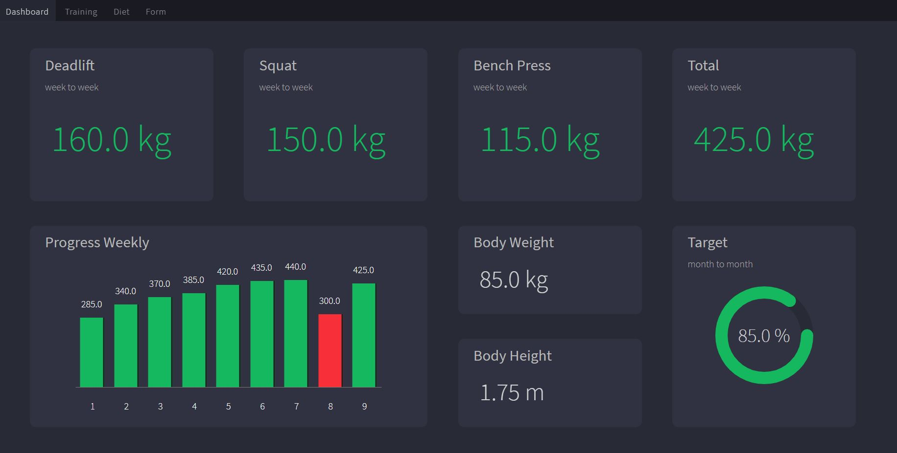

Progress Tracking Dashboard
- Flask
- Python
- SQLAlchemy
- HTML
- CSS
- JavaScript
Dashboard allows user to track the progress of the 3 main lifts id est: bench press, squat and deadlift. User is able to provide its one-rep max lifts per each week to see the overall tendation of its strength.
